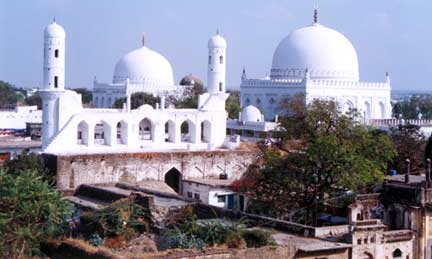
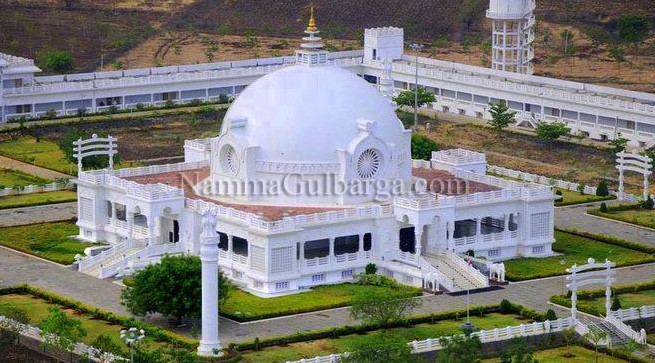
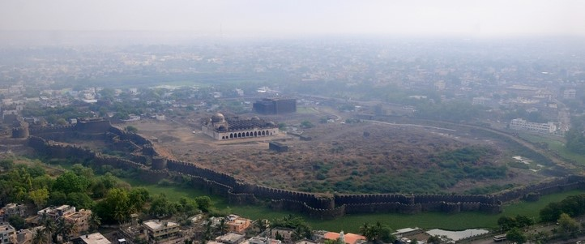
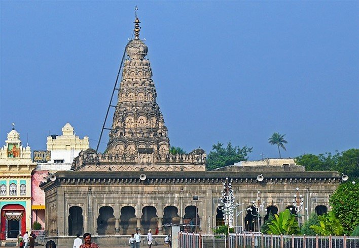
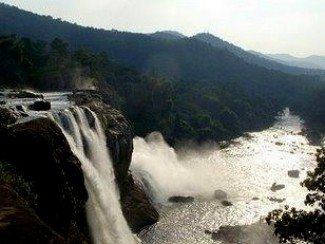
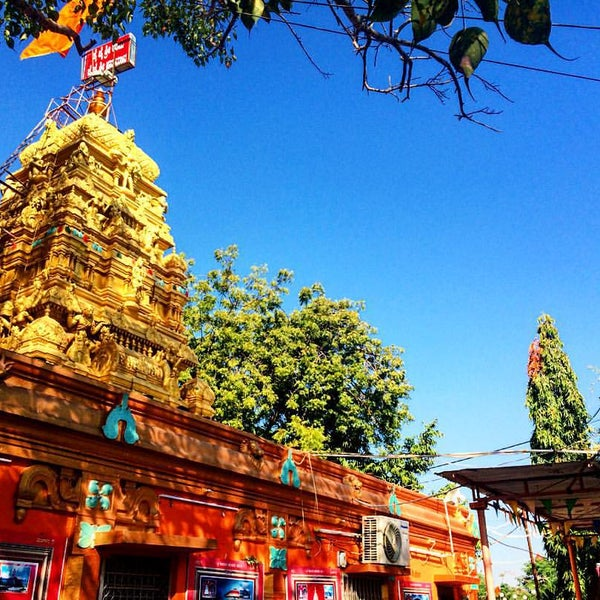
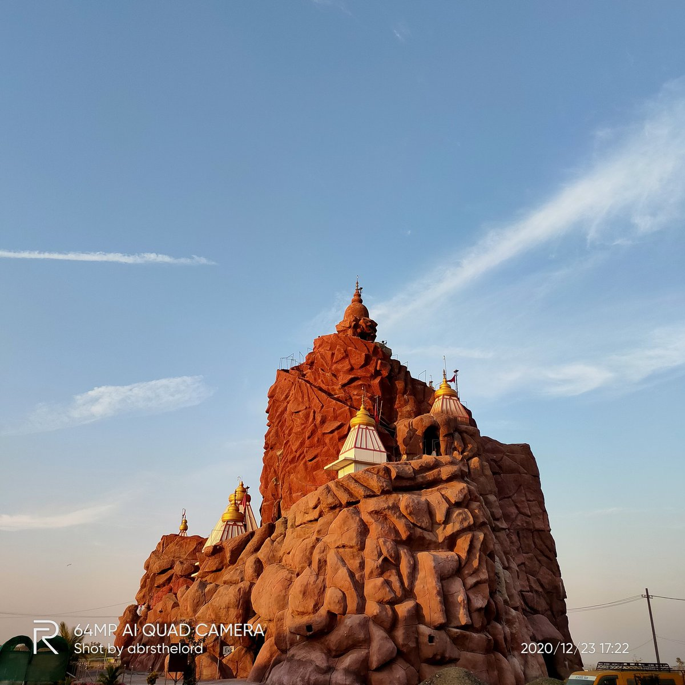
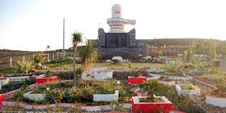

To witness a unique confluence of religious diversity, visit the Khwaja Bande Nawaz Dargah. This is the tomb of the famous Sufi mystic Khwaja Bande Nawaz. Home to a vast library composed of more than ten thousand books of Urdu, Arabic and Persian languages, this mausoleum is one of the most visited sites of Gulbarga. The Persian, Indo-Saracenic and Arabic influences on the building are evident from the dome and towers that surround the tomb. Even today, the Darga stands as a testament to the unity of various religions of the region. People believe that all wishes come true to earnest devotees who step foot in the mausoleum, regardless of religion. The neem tree built on the grave of the saint’s daughter is said to have healing powers too.

Nestled amidst arrant tranquillity and serenity, Buddha Vihar is the place to be if you are someone who enjoys peace. Situated within the Gulbarga University, the monument is a significant Buddhist pilgrimage center constructed in the conventional Buddhist styles of India. The Vihar is located in Gulbarga, a city also popularly referred to as Kalaburagi. Formally inaugurated by the spiritual leader of Tibet, Dalai Lama, Buddha Vihar stands as a shrine hailing non-violence and world peace. Keep in mind that the site is closed between 12 noon and 4:00 PM every day

Arguably the most popular tourist attraction at Gulbarga, this fort was built in the twelfth century by the Kakatiya king Raja Gulchand. This granite monument imposes a stunning façade which exhibits a beautiful blend of Persian and Indian architecture. Renovated by the Bahmani rulers two hundred years later, the Fort was expanded to strike a formidable barrier to invaders. Boasting of 15 towers, the structure is sure to make you marvel at the glory of the rulers of yore. The Jama Masjid located inside warms the soul with its spires and columns. You can picnic with your loved ones inside the ruins of the fort too!

Sharana Basaveshwara Temple also known as Sabhamandapa, is located in Gulbarga. It is a sacred place dedicated to Saint Basaveshwara, who is identified as a teacher, philosopher, and enlightened being who made several significant contributions to society, under the wing of Hinduism. Built-in the twelfth century by the Lingayat saint Sharana Basaveshwara, this temple is a marvel of Hindu stone carvings

The Chandrampalli dam is located in Karnataka, in the district of Gulbarga. It is one of the primary dams constructed on the bed of river Bhima (during 1973). The dam is surrounded by the thick covers of Gottam Gotta forest. There is an island located on the Dam which has attracted various tourists and visitors. The Dam is about 28.65 meters high and 926 meters long. The pleasant weather of the town is accompanied by the beautiful scape of the two mountains that are connected through the Dam. The region has emerged as an ideal location for trekking and camping.

This temple is the newest addition to the tourist attractions of Gulbarga. Less than a hundred years old, the significance of this temple lies in the massive statue of the Hindu God Hanuman at the entrance. The large idol of Hanuman is kneeling as two royal elephants flank the statue. Locally called ‘Guarantee’ Hanuman, this deity is believed to grant all wishes. Ram Navami festivities are held with great pomp and joy here.

Vaishno Devi, who was a devotee of Lord Vishnu, had taken a vow of celibacy. One day another god, Bhairon Nath, saw her and chased after her. During the chase, the goddess felt thirsty and shot an arrow into the earth from where a spring gushed out.

Who is the God of Brahma Kumaris? Shiva Baba, god of all religions, is considered as a spiritual guide of Brahma Kumaris, whose objective is to awaken the humanity and remove evils. Shiva Baba is a supreme soul and a point of light.